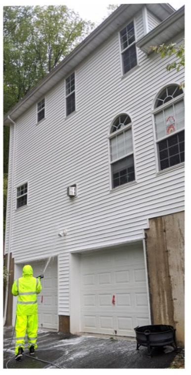
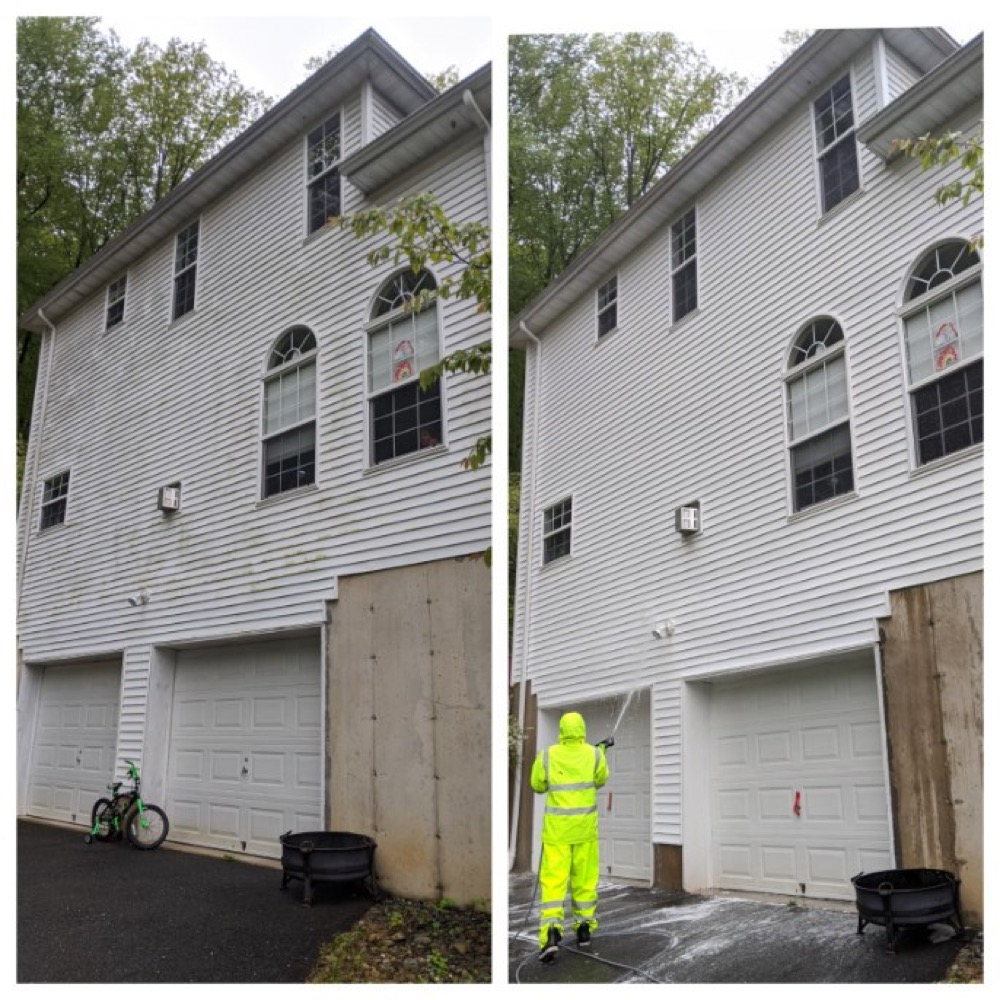
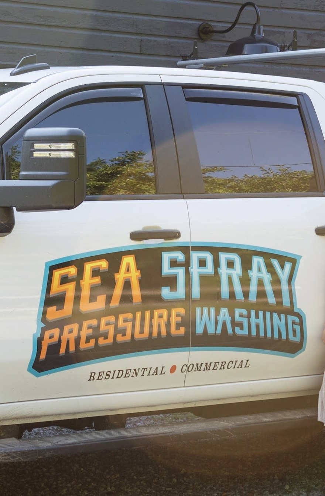

House Washing
A full soft-wash of your siding — vinyl, stucco, brick or wood — to remove algae, dirt and cobwebs and bring the color back.
Sea Spray Soft Washing uses gentle, low-pressure cleaning to lift years of algae, dirt and grime off your siding, roof and deck — thorough results that won't damage the exterior of your home.

A lot of "power washing" cracks siding, drives water behind it, and strips paint. Soft washing does the opposite — low pressure plus the right cleaning solution dissolves algae and grime at the source, so it actually stays clean longer.
Gentle, low-pressure application that lifts mold, mildew and algae without forcing water or chemicals into your home.
Blasting delicate surfaces with high PSI can do real, expensive damage — and only removes what's on the surface.
From a full house wash to a stained driveway, every job uses the soft-wash method dialed in for that surface — residential and commercial across Warren County.
A full soft-wash of your siding — vinyl, stucco, brick or wood — to remove algae, dirt and cobwebs and bring the color back.
Black streaks on a shingle roof are algae. We treat it with a low-pressure soft wash that's safe for shingles — no walking damage, no blasting.
Gentle, even cleaning across the whole exterior that protects seams, trim and painted surfaces while it works.
Wood and composite decks, railings and fencing cleaned without splintering or gouging — ready to enjoy or to seal.
Walkways, patios, steps and driveways — lifting embedded dirt, oil shadows and organic stains off concrete and pavers.
Storefronts, units and commercial buildings cleaned on a schedule that keeps the property looking sharp for customers.
Same house, same day. Years of green algae and grime on the left — a clean, even, undamaged exterior on the right. No high-pressure blasting, no streaks, no harm to the siding.

The soft-wash method is built around one rule: clean it thoroughly without doing any damage to the surface underneath.
Trim, railings, walkways and the spots most crews skip — we leave the property looking like nothing was out of place.
We tell you what your surface actually needs, what it doesn't, and what the result will be — before any work starts.
Available 7am–7pm, seven days a week. Call or send a few photos and we'll get you a straight answer fast.
One-time refresh, annual house wash, or a recurring commercial schedule — sized to the property and the goal.
Based in Oxford and serving the surrounding NJ towns — you're working with neighbors, not a faceless franchise.
Call, text photos, or request a free estimate. Tell us what you'd like cleaned and any concerns about the surface.
We assess the surfaces, recommend the right soft-wash approach, and give you a clear, upfront price — no surprises.
On scheduled day, we protect plantings and surroundings, then soft-wash methodically, surface by surface.
We walk it with you and don't leave until it looks brand new — and there isn't a thing out of place.
"Danny did an amazing job cleaning my home's exterior. He is extremely knowledgeable and professional. If you want a high quality service without damaging the exterior of your home then Sea Spray is the place to call."
"Sea Spray did an amazing job at my house. They take professionalism and quality to a whole different level. The house and deck looked brand new and there wasn't a thing out of place!"
"Danny was extremely professional and did a great job. We had our driveway and walkway/steps done as well and everything came out great."
Based in Oxford, Sea Spray Soft Washing cleans homes and businesses across Warren County and the surrounding towns. Not sure if you're in range? Give us a call — we'll let you know.

Sea Spray Soft Washing is a Warren County exterior-cleaning company built on one idea: you shouldn't have to choose between a truly clean home and a home that's protected. The soft-wash method gives you both — low pressure and the right solution, so siding, roofs, decks and concrete come back to life without the damage high-pressure blasting can cause.
Homeowners across the area keep coming back for the same reasons — careful work, a knowledgeable approach to each surface, and the kind of finish where the house looks brand new and nothing's left out of place.
Soft washing uses low water pressure plus a cleaning solution that breaks down algae, mold and mildew. Instead of blasting grime off the surface, it dissolves it at the source — so it cleans more thoroughly and the results last longer, without risking damage to your siding or roof.
No — that's the entire reason to soft wash. Because the pressure is kept low and the solution does the work, soft washing is safe for vinyl, stucco, painted surfaces, wood and shingle roofs that high-pressure washing can crack, gouge or strip.
Because soft washing kills the algae and mold at the root rather than just rinsing the surface, results typically hold up far longer than a high-pressure rinse. Many homeowners have us back about once a year to keep everything looking its best.
Plenty — roofs, decks, fences, driveways, walkways, patios, steps and concrete, plus commercial storefronts and buildings. If it's an exterior surface that's gone green, grimy or stained, ask us.
Yes. Alongside homes, we clean commercial exteriors and can set up a recurring schedule so your property always looks sharp for customers.
Call or text us at (908) 331-3853, or send a few photos through the estimate form. We'll look at the surfaces, recommend the right approach, and give you a clear, upfront quote for free.
Tell us what you'd like cleaned and we'll get back to you with a straightforward, no-pressure quote — for the soft-wash kind of clean that won't harm your home.
We'll reply with a quote and the right soft-wash plan for your property.